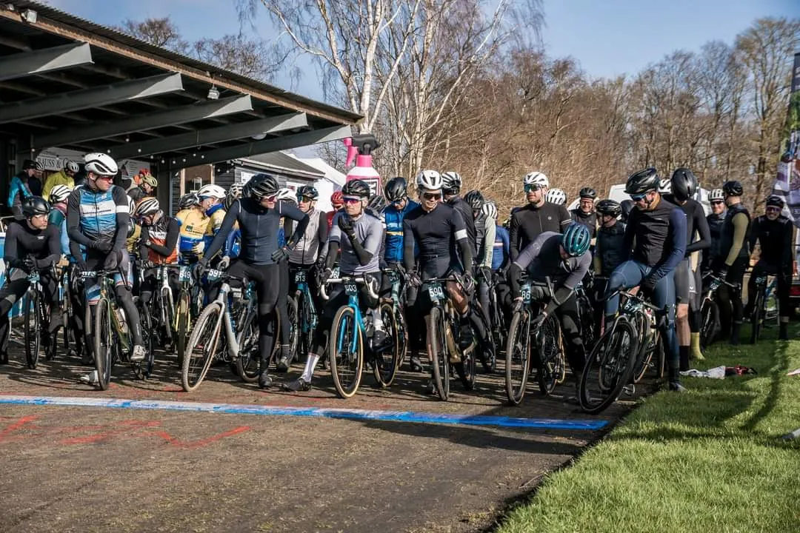
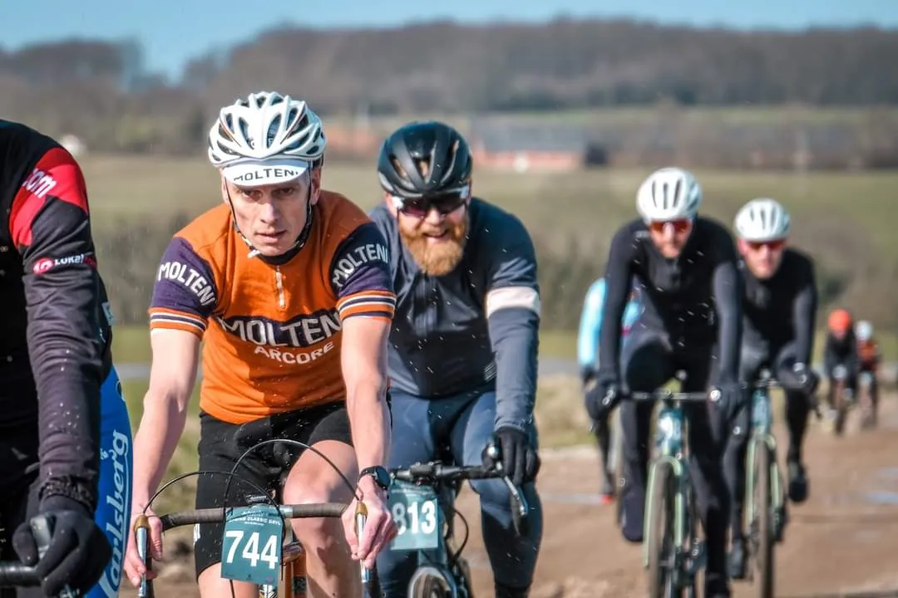
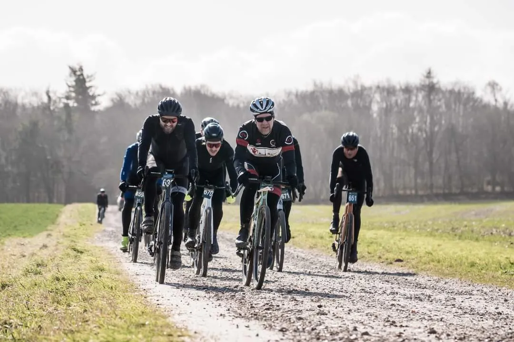
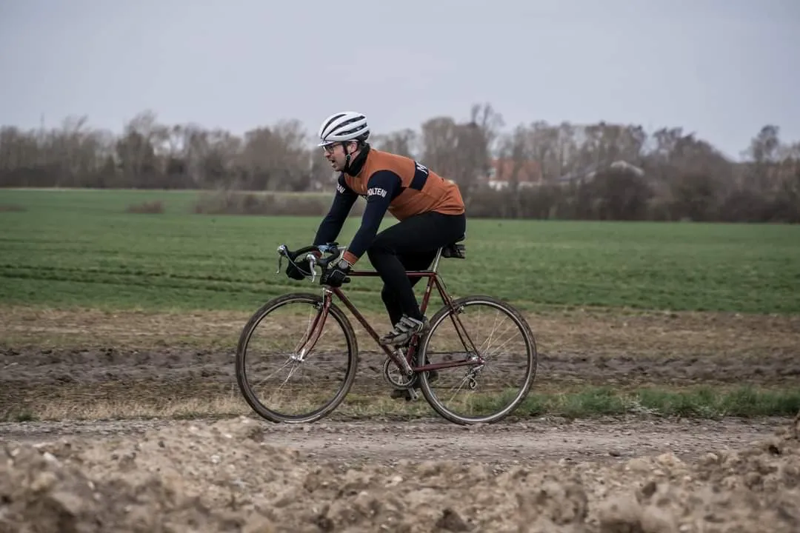
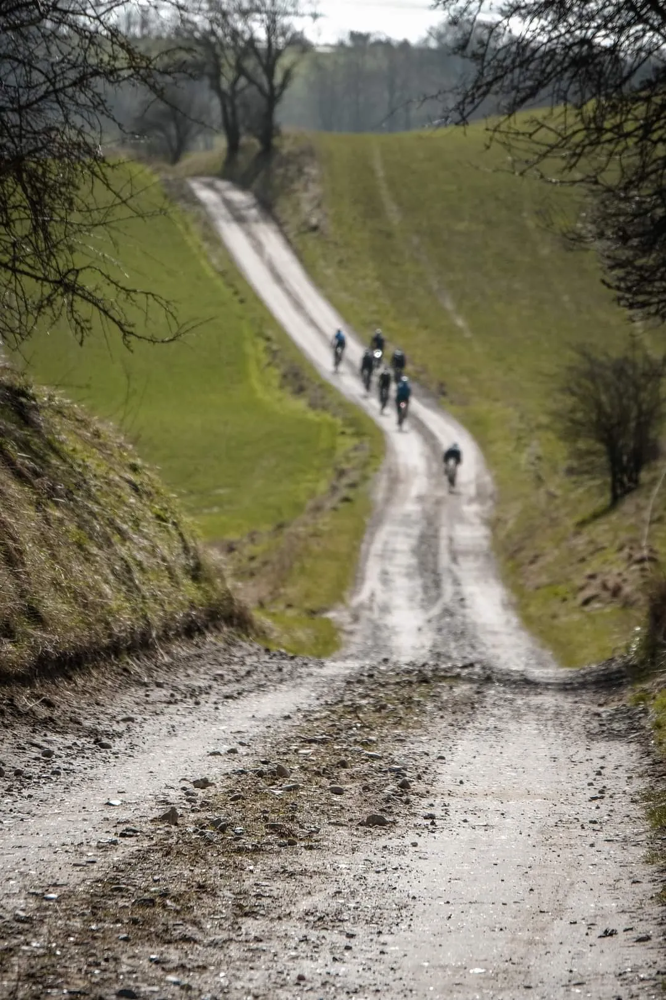
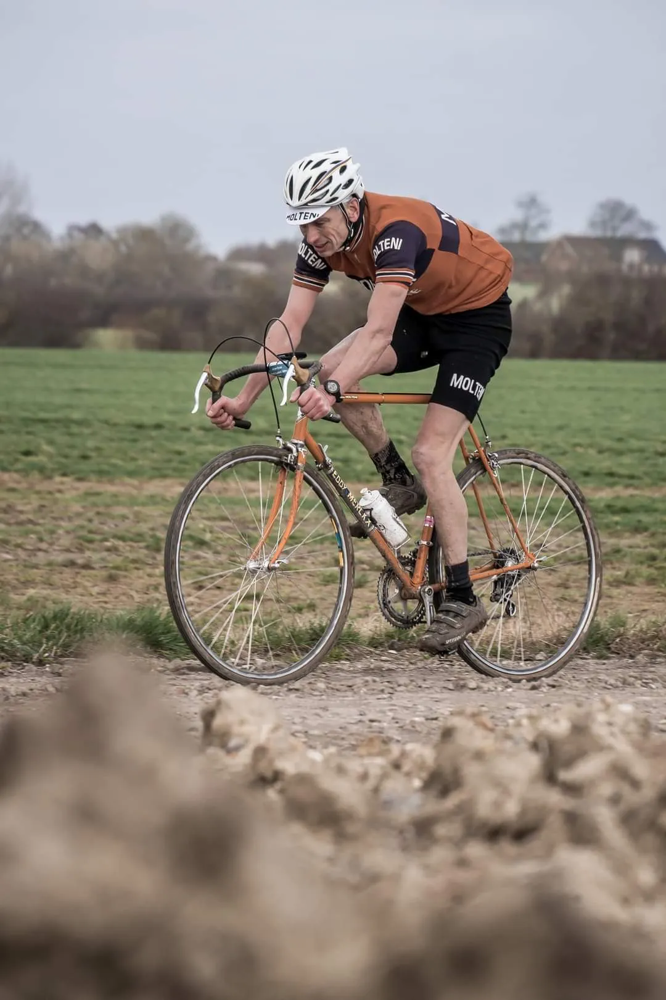
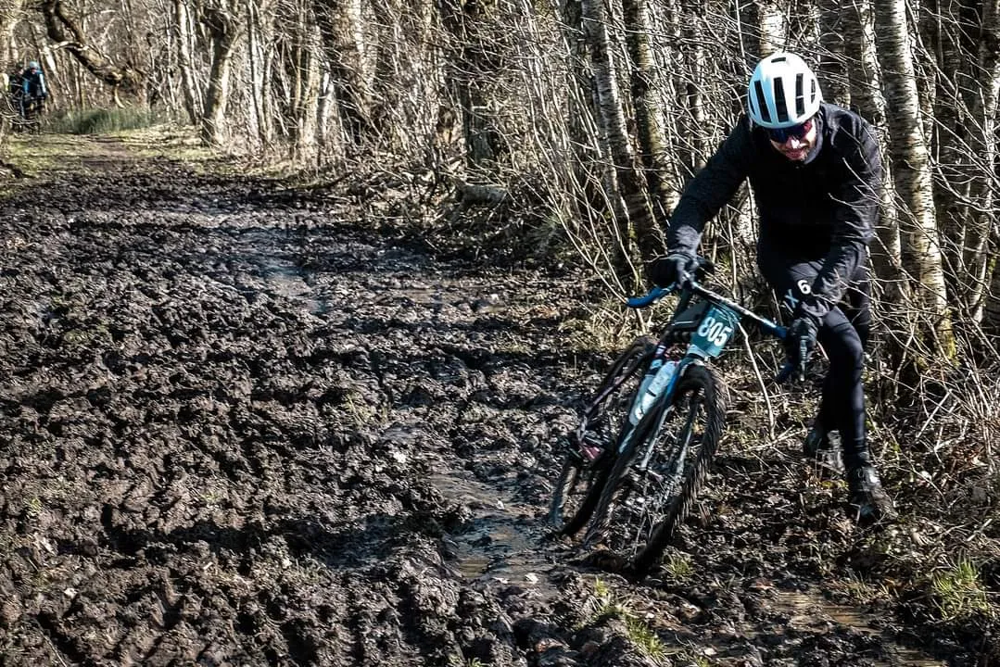

Spring Classic GRVL 2024 – brune veje og hvide ben

Squadra Molteni sendte lørdag d. 16.marts tre forårskåde ryttere til start i sæsonens første løb – Spring Classic GRVL – i det bakkede og forblæste landskab omkring Odder. Kaptajn Niels Bjørnsteen, Kristian Blume og stagiaire Flemming Lohmann Mikkelsen var udtaget til at følge op på sidste års stærke resultat med fuld plade på stålpodiet.
Arrangøren, Adventure Cycling, har ladet sig inspirere af de 3 smukkeste løb i verden: Flandern Rundt, Strade Bianche og Paris Roubaix – og lovede igen i år et ”pift” af ægte forårsklassiker stemning. Og forårsstemning, dét var der. Drivende skyer, vandpytter, skarpe solglimt og en bidsk, frisk vind, der fik de ca. 7 grader til at føles en sjat koldere.
Ved startstregen var en perlerække af moderne carbon GRVL-raketter med 2.8 bar tubeless 40 mm dæk linet op. Og en tilsvarende række af vinterekviperede ryttere med kun ansigterne eksponeret for vinden. Og så tre ryttere på stål, selvfølgelig, i ”belgisk forår”-outfit med orange uldtrøjer og hvide ben.
Og så gik det ellers over stok og sten, grus, pladder, pytter, skovveje, smalle spor, asfaltstykker, marker og sommerhusområder fra Odder over Hundslund til Horsens Fjord og retur via Ørting til Saksild bugt og Nølev. Der blev delt føringer, lukket huller og bidt tænder.
“Groadbook’en” sagde 67 km, men ruten var faktisk 75 km, viste det sig.
De sidste 8 km var en uvelkommen overraskelse, konstaterede Kristian. Tændstikkerne var brugt og der var kun gløder tilbage på det sidste stræk over markerne fra Saksild. Den var hård!
Anstrengelserne bar dog frugt – sidste års stålpodie blev forsvaret og i den åbne klasse sikrede Molteni sig 10.pladsen. Og dansk forårs-”tan line” på lårene.
FORZA Molteni – og tak for turen til Adventure Cycling!






